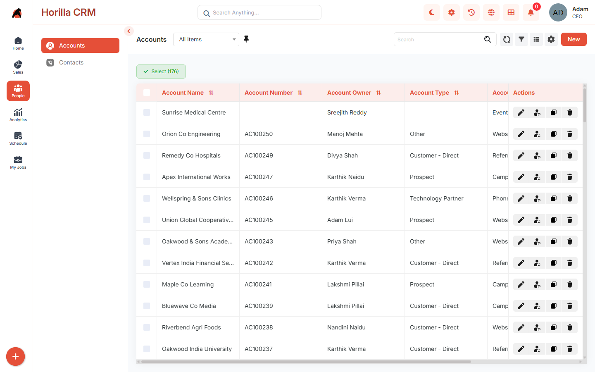
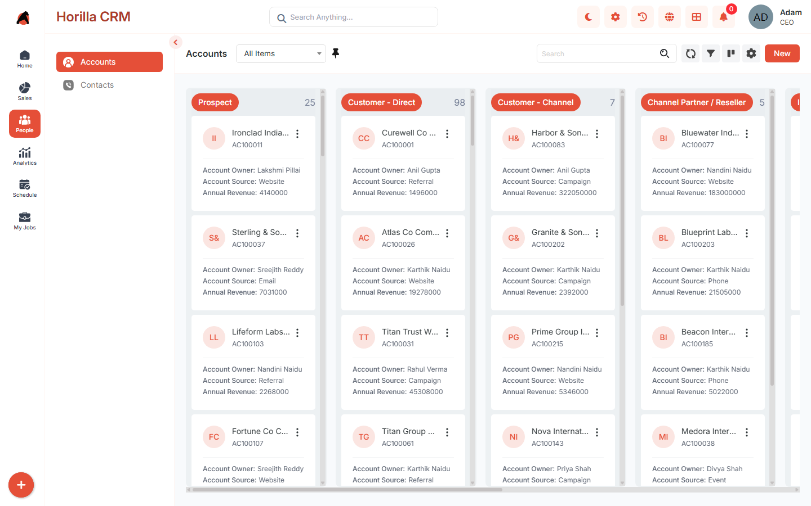
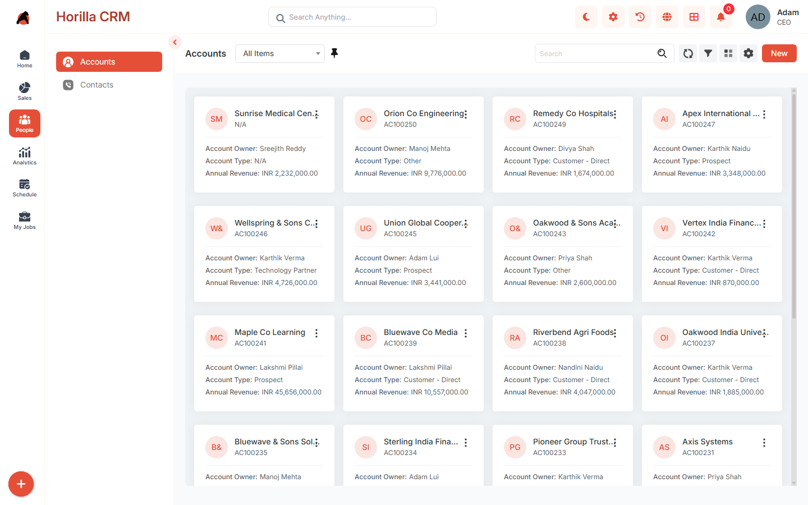
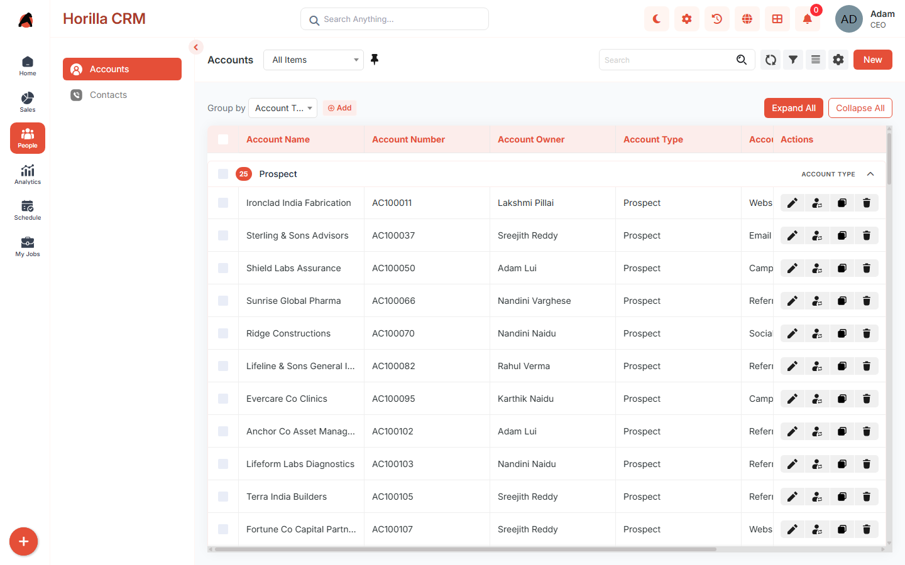
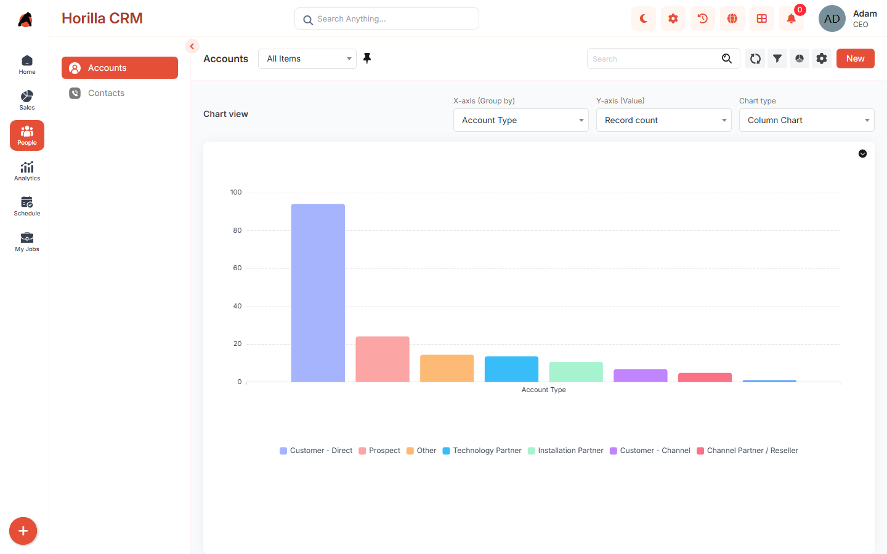
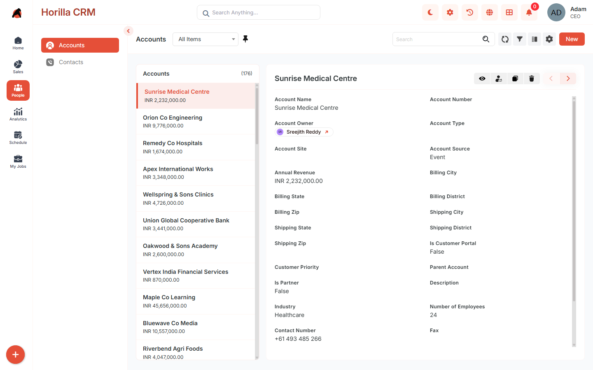
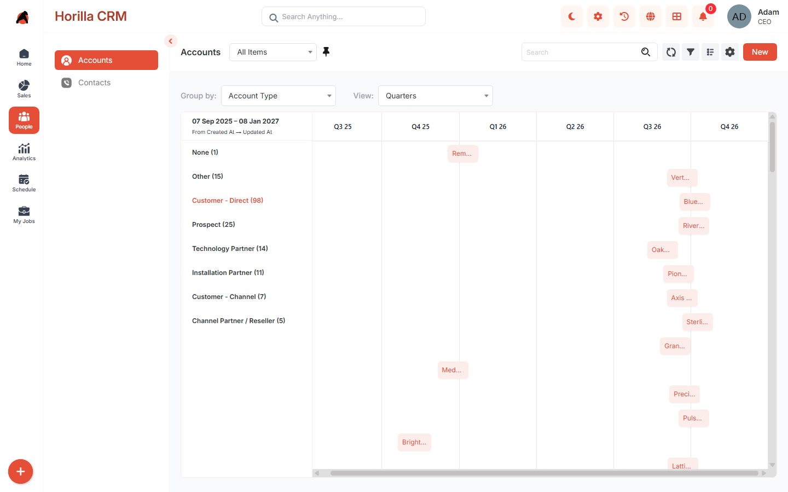
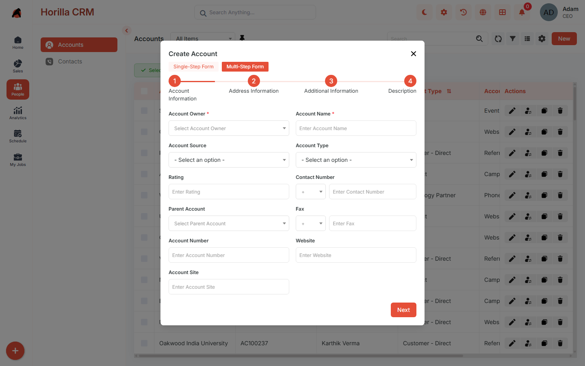
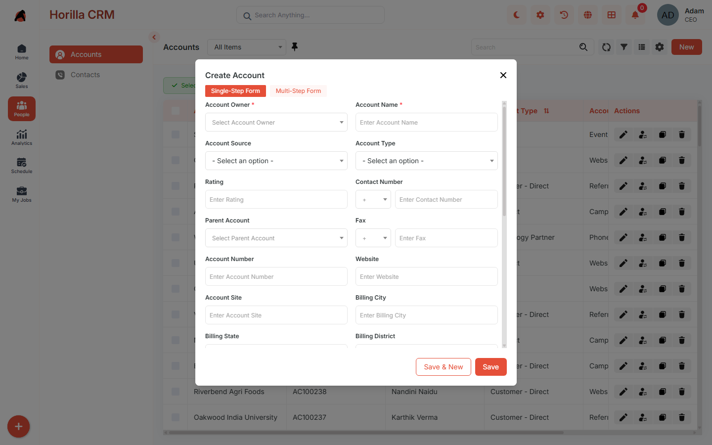
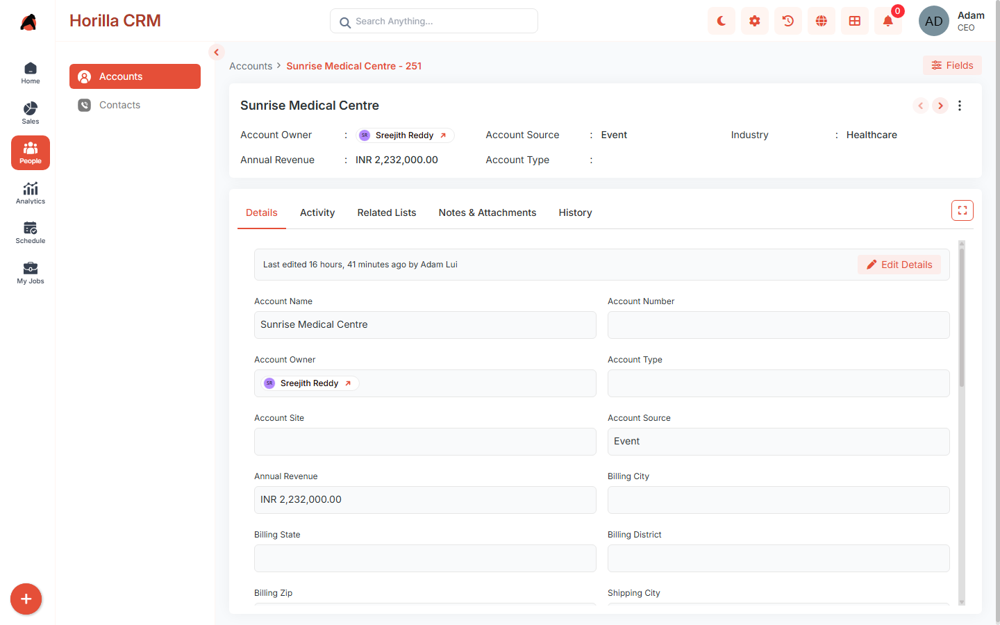

Introduction
The Accounts module is the central workspace for organisations and business entities connected to customers, prospects and partners. It keeps the relationship with each organisation, together with its activities and interaction history, in one place.
Key Features and Functionalities
1.1 Accounts Overview
- Open the module from Accounts in the Sales sidebar menu.
- Every account is listed together, with a search box and filters for criteria such as company name or industry.
- Columns can be adjusted and the filters applied to the list can be tailored.
- Select rows to run bulk actions: Edit, Export and Mass Delete.

1.2 Kanban View
- Accounts are grouped by relationship stage, or by whichever category has been configured.
- Cards can be dragged and dropped from one stage to another, and the Kanban settings are customisable.

1.3 Card View
- Each card shows Company Name, Industry, Phone Number, Website and Annual Revenue.
- The search and filter options from List View apply here as well.

1.4 Group By View
- Group accounts by Industry, Account Owner, Account Type or Country.
- Each grouped section can be collapsed or expanded.

1.5 Chart View
- Charts cover industry distribution, account ownership and revenue segmentation.

1.6 Split View
- The left panel holds the account list and the right panel shows the details of the selected account.
- Details load in place, so no page navigation is needed.

1.7 Timeline View
- Accounts are ordered by creation date or by last updated date.
- Rows can be grouped by Industry or Account Owner.
- The columns shown are Company Name, Industry, Website, Phone Number and Account Owner.

1.8 Creating a New Account
Click New on the Accounts page to open the creation form. Two entry modes are available, and you can switch between them at any time.
Multi-Step Form

- Step 1 – Basic Information: Account Owner, Company Name, Industry, Annual Revenue, Website, Phone Number.
- Step 2 – Address Information: City, State, Country, Postal Code (Zip).
- Step 3 – Additional Information: Parent Account, Description / Notes, Contact Details, Additional Business Information.
Single-Step Form

- All fields are presented on one page, with no step navigation, which makes data entry faster.
- Use the toggle in the form header to switch to Single-Step Mode, then click Save.
Account Detailed Information
- Open an account by clicking its name in the list.
- The detail view shows company name, industry, website, phone, annual revenue, parent account and address.
- Information is organised into the Details, Activity, Related Lists and History tabs.
- Inline edit icons allow fields to be updated directly from this view.

The source page numbers this section "1.4", repeating the number already used for Group By View.